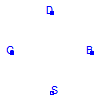
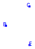

This package contains both the semiconductor devices models of SPICE3, which are available, and their modelcards. The user should apply the models of this package.
All models of this package extend models of the package Repository, which contains the functions, parameters and data which are necessary to model the behaviour of the semiconductor devices.The modelcard records contain the SPICE3 technology parameters, which can be adjusted for more than one MOS simultaneously.
Extends from Modelica.Icons.Package (Icon for standard packages).
| Name | Description |
|---|---|
| PMOS MOSFET device | |
| NMOS MOSFET device | |
| Record for the specification of modelcard parameters | |
| Q_NPNBJT | Bipolar junction transistor |
| Q_PNPBJT | Bipolar junction transistor |
| Record for the specification of modelcard parameters | |
| Diode model | |
| Record for the specification of modelcard parameters | |
| Semiconductor resistor from SPICE3 | |
| Record for the specification of modelcard parameters |
 Modelica.Electrical.Spice3.Semiconductors.M_PMOS
Modelica.Electrical.Spice3.Semiconductors.M_PMOS
The model M_PMOS is a P channel MOSFET transistor with fixed level 1: Shichman-Hodges model
The models from the package Semiconductors accesses to the package Repository where all functions,
records and data are stored and modeled that are neede for the semiconductor models.
The package Semiconductors is for user access but not the package Repository.
Extends from Modelica.Electrical.Spice3.Internal.MOS (Metal-Oxide Semiconductor Field-Effect Transistor).
| Type | Name | Default | Description |
|---|---|---|---|
| Integer | mtype | 1 | MOSFET type: 0 - N channel, 1 - P channel |
| Length | L | 1e-4 | Length [m] |
| Length | W | 1e-4 | Width [m] |
| Area | AD | 0 | Area of the drain diffusion [m2] |
| Area | AS | 0 | Area of the source diffusion [m2] |
| Length | PD | 0 | Perimeter of the drain junction [m] |
| Length | PS | 0 | Perimeter of the source junction [m] |
| Real | NRD | 1 | Number of squares of the drain diffusions |
| Real | NRS | 1 | Number of squares of the source diffusions |
| Integer | OFF | 0 | Optional initial condition: 0 - IC not used, 1 - IC used, not implemented yet |
| Voltage | IC | Initial condition values, not implemented yet [V] | |
| Temp_C | TEMP | 27 | Operating temperature of the device [degC] |
| ModelcardMOS | modelcard | MOSFET modelcard |
| Type | Name | Description |
|---|---|---|
| PositivePin | G | gate node |
| PositivePin | D | drain node |
| NegativePin | S | source node |
| PositivePin | B | bulk node |
model M_PMOS "PMOS MOSFET device"
extends Modelica.Electrical.Spice3.Internal.MOS(
final mtype=1);
equation
end M_PMOS;
 Modelica.Electrical.Spice3.Semiconductors.M_NMOS
Modelica.Electrical.Spice3.Semiconductors.M_NMOS
The model M_NMOS is a N channel MOSFET transistor with fixed level 1: Shichman-Hodges model
The models from the package Semiconductors accesses to the package Repository where all functions,
records and data are stored and modeled that are neede for the semiconductor models.
The package Semiconductors is for user access but not the package Repository.
Extends from Modelica.Electrical.Spice3.Internal.MOS (Metal-Oxide Semiconductor Field-Effect Transistor).
| Type | Name | Default | Description |
|---|---|---|---|
| Integer | mtype | 0 | MOSFET type: 0 - N channel, 1 - P channel |
| Length | L | 1e-4 | Length [m] |
| Length | W | 1e-4 | Width [m] |
| Area | AD | 0 | Area of the drain diffusion [m2] |
| Area | AS | 0 | Area of the source diffusion [m2] |
| Length | PD | 0 | Perimeter of the drain junction [m] |
| Length | PS | 0 | Perimeter of the source junction [m] |
| Real | NRD | 1 | Number of squares of the drain diffusions |
| Real | NRS | 1 | Number of squares of the source diffusions |
| Integer | OFF | 0 | Optional initial condition: 0 - IC not used, 1 - IC used, not implemented yet |
| Voltage | IC | Initial condition values, not implemented yet [V] | |
| Temp_C | TEMP | 27 | Operating temperature of the device [degC] |
| ModelcardMOS | modelcard | MOSFET modelcard |
| Type | Name | Description |
|---|---|---|
| PositivePin | G | gate node |
| PositivePin | D | drain node |
| NegativePin | S | source node |
| PositivePin | B | bulk node |
model M_NMOS "NMOS MOSFET device"
extends Modelica.Electrical.Spice3.Internal.MOS(
final mtype=0);
equation
end M_NMOS;
Technology model parameters of MOSFET transistor with fixed level 1: Shichman-Hodges model
In modelcards, that are typical for SPICE3, the so called technology parameters are stored. These parameters are usually set for more than one semiconductor device in a circuit, e.g., the temperature of a whole electrical circuit.
Extends from Modelica.Electrical.Spice3.Internal.ModelcardMOS (Record with technological parameters (.model)).
| Type | Name | Default | Description |
|---|---|---|---|
| Voltage | VTO | -1e40 | Zero-bias threshold voltage, default 0 [V] |
| Transconductance | KP | -1e40 | Transconductance parameter, default 2e-5 [A/V2] |
| Real | GAMMA | -1e40 | Bulk threshold parameter, default 0 |
| Voltage | PHI | -1e40 | Surface potential, default 0.6 [V] |
| InversePotential | LAMBDA | 0 | Channel-length modulation, default 0 [1/V] |
| Resistance | RD | -1e40 | Drain ohmic resistance, default 0 [Ohm] |
| Resistance | RS | -1e40 | Source ohmic resistance, default 0 [Ohm] |
| Capacitance | CBD | -1e40 | Zero-bias B-D junction capacitance, default 0 [F] |
| Capacitance | CBS | -1e40 | Zero-bias B-S junction capacitance, default 0 [F] |
| Current | IS | 1.e-14 | Bulk junction saturation current [A] |
| Voltage | PB | 0.8 | Bulk junction potential [V] |
| Permittivity | CGSO | 0.0 | Gate-source overlap capacitance per meter channel width [F/m] |
| Permittivity | CGDO | 0.0 | Gate-drain overlap capacitance per meter channel width [F/m] |
| Permittivity | CGBO | 0.0 | Gate-bulk overlap capacitance per meter channel width [F/m] |
| Resistance | RSH | 0.0 | Drain and source diffusion sheet resistance [Ohm] |
| CapacitancePerArea | CJ | 0.0 | Zero-bias bulk junction bottom cap. per sq-meter of junction area [F/m2] |
| Real | MJ | 0.5 | Bulk junction bottom grading coefficient |
| Permittivity | CJSW | 0.0 | Zero-bias junction sidewall cap. per meter of junction perimeter [F/m] |
| Real | MJSW | 0.5 | Bulk junction sidewall grading coefficient |
| CurrentDensity | JS | 0.0 | Bulk junction saturation current per sq-meter of junction area [A/m2] |
| Length | TOX | -1e40 | Oxide thickness, default 1e-7 [m] |
| Real | NSUB | -1e40 | Substrate doping, default 0 |
| PerArea_cm | NSS | 0.0 | Surface state density [1/cm2] |
| Real | TPG | 1.0 | Type of gate material: +1 opp. to substrate, -1 same as substrate, 0 Al gate |
| Length | LD | 0.0 | Lateral diffusion [m] |
| Area_cmPerVoltageSecond | UO | 600 | Surface mobility [cm2/(V.s)] |
| Real | KF | 0 | Flicker noise coefficient |
| Real | AF | 1.0 | Flicker noise exponent |
| Real | FC | 0.5 | Coefficient for forward-bias depletion capacitance formula |
| Temp_C | TNOM | -1e40 | Parameter measurement temperature, default 27 [degC] |
record ModelcardMOS "Record for the specification of modelcard parameters" extends Modelica.Electrical.Spice3.Internal.ModelcardMOS;end ModelcardMOS;

The model Q_NPNBJT is a NPN bipolar junction transistor model: Modified Gummel-Poon.
The models from the package Semiconductors accesses to the package Repository where all functions,
records and data are stored and modeled that are neede for the semiconductor models.
The package Semiconductors is for user access but not the package Repository.
Extends from Modelica.Electrical.Spice3.Internal.BJT (Bipolar junction transistor).
| Type | Name | Default | Description |
|---|---|---|---|
| Real | TBJT | 1 | Type of transistor (NPN=1, PNP=-1) |
| Real | AREA | 1.0 | Area factor |
| Boolean | OFF | false | Optional initial condition: false - IC not used, true - IC used, not implemented yet |
| Voltage | IC_VCE | Initial condition value (VBE, not implemented yet [V] | |
| Voltage | IC_VBE | Initial condition value (VBC, not implemented yet [V] | |
| Temp_C | TEMP | 27 | Operating temperature of the device [degC] |
| Boolean | SENS_AREA | false | Flag to request sensitivity WRT area, not implemented yet |
| ModelcardBJT | modelcard | BJT modelcard | |
| SpiceConstants | Con | General constants of SPICE simulator |
| Type | Name | Description |
|---|---|---|
| PositivePin | B | Base node |
| PositivePin | C | Collector node |
| NegativePin | E | Emitter node |
model Q_NPNBJT "Bipolar junction transistor"
extends Modelica.Electrical.Spice3.Internal.BJT(
final TBJT=1);
end Q_NPNBJT;
The model Q_PNPBJT is a PNP bipolar junction transistor model: Modified Gummel-Poon.
The models from the package Semiconductors accesses to the package Repository where all functions,
records and data are stored and modeled that are neede for the semiconductor models.
The package Semiconductors is for user access but not the package Repository.
Extends from Modelica.Electrical.Spice3.Internal.BJT (Bipolar junction transistor).
| Type | Name | Default | Description |
|---|---|---|---|
| Real | TBJT | -1 | Type of transistor (NPN=1, PNP=-1) |
| Real | AREA | 1.0 | Area factor |
| Boolean | OFF | false | Optional initial condition: false - IC not used, true - IC used, not implemented yet |
| Voltage | IC_VCE | Initial condition value (VBE, not implemented yet [V] | |
| Voltage | IC_VBE | Initial condition value (VBC, not implemented yet [V] | |
| Temp_C | TEMP | 27 | Operating temperature of the device [degC] |
| Boolean | SENS_AREA | false | Flag to request sensitivity WRT area, not implemented yet |
| ModelcardBJT | modelcard | BJT modelcard | |
| SpiceConstants | Con | General constants of SPICE simulator |
| Type | Name | Description |
|---|---|---|
| PositivePin | B | Base node |
| PositivePin | C | Collector node |
| NegativePin | E | Emitter node |
model Q_PNPBJT "Bipolar junction transistor"
extends Modelica.Electrical.Spice3.Internal.BJT(
final TBJT=-1);
end Q_PNPBJT;
In modelcards, that are typical for SPICE3, the so called technology parameters are stored. These parameters are usually set for more than one semiconductor device in a circuit, e.g., the temperature of a whole electrical circuit.
Technology parameters of the modified Gummel-Poon bipolar junction transistor model
Extends from Modelica.Electrical.Spice3.Internal.ModelcardBJT (Record with technological parameters (.model)).
| Type | Name | Default | Description |
|---|---|---|---|
| Temp_C | TNOM | -1e40 | Parameter measurement temperature, default 27 [degC] |
| Current | IS | 1e-16 | Transport saturation current [A] |
| Real | BF | 100.00 | Ideal maximum forward beta F |
| Real | NF | 1.0 | Forward current emission coefficientF |
| Real | NE | 1.5 | B-E leakage emission coefficient |
| Current | ISE | -1e40 | B-E leakage saturation current, default = 0 [A] |
| Current | ISC | -1e40 | B-C leakage saturation current, default = 0 [A] |
| Real | BR | 1.0 | Ideal maximum reverse beta |
| Real | NR | 1.0 | Reverse current emission coefficient |
| Real | NC | 2.0 | B-C leakage emission coefficient |
| Voltage | VAF | 0.0 | Forward Early voltage [V] |
| Current | IKF | 0.0 | Forward beta roll-off corner current [A] |
| Voltage | VAR | 0.0 | Reverse Early voltage [V] |
| Current | IKR | 0.0 | Reverse beta roll-off corner current [A] |
| Resistance | RE | 0.0 | Emitter resistance [Ohm] |
| Resistance | RC | 0.0 | Collector resistance [Ohm] |
| Current | IRB | 0.0 | Current for base resistance = (rb+rbm)/2 [A] |
| Resistance | RB | 0.0 | Zero bias base resistance [Ohm] |
| Resistance | RBM | -1e40 | Minimum base resistance, default = 0.0 [Ohm] |
| Capacitance | CJE | 0.0 | Zero bias B-E depletion capacitance [F] |
| Voltage | VJE | 0.75 | B-E built in potential [V] |
| Real | MJE | 0.33 | B-E junction exponential faktor |
| Time | TF | 0.0 | Ideal forward transit time [s] |
| Real | XTF | 0.0 | Coefficient for bias dependence of TF |
| Current | ITF | 0.0 | High current dependence of TF, [A] |
| Voltage | VTF | 0.0 | Voltage giving VBC dependence of TF [V] |
| Temp_C | PTF | 0.0 | Excess phase at freq=1/(TF*2*Pi) Hz [degC] |
| Capacitance | CJC | 0.0 | Zero bias B-C depletion capacitance [F] |
| Voltage | VJC | 0.75 | B-C built in potential [V] |
| Real | MJC | 0.33 | B-C junction grading coefficient |
| Real | XCJC | 1.0 | Fraction of B-C cap to internal base |
| Time | TR | 0.0 | Ideal reverse transit time [s] |
| Capacitance | CJS | 0.0 | Zero bias C-S capacitance [F] |
| Voltage | VJS | 0.75 | Substrate junction built-in potential [V] |
| Real | MJS | 0.0 | Substrate junction grading coefficient |
| Real | XTB | 0.0 | Forward and reverse beta temperature exponent |
| GapEnergy | EG | 1.11 | Energy gap for IS temperature effect on IS [eV] |
| Real | XTI | 3.0 | Temperature exponent for IS |
| Real | KF | 0.0 | Flicker Noise Coefficient |
| Real | AF | 1.0 | Flicker Noise Exponent |
| Real | FC | 0.5 | Forward bias junction fit parameter |
record ModelcardBJT "Record for the specification of modelcard parameters" extends Modelica.Electrical.Spice3.Internal.ModelcardBJT;end ModelcardBJT;
The model D_DIODE is a Junction diode model
The models from the package Semiconductors accesses to the package Repository where all functions,
records and data are stored and modeled that are neede for the semiconductor models.
The package Semiconductors is for user access but not the package Repository.
Extends from Modelica.Electrical.Spice3.Internal.DIODE (Diode model).
| Type | Name | Default | Description |
|---|---|---|---|
| Real | AREA | 1 | Area factor |
| Boolean | OFF | false | Optional initial condition: false - IC not used, true - IC used, not implemented yet |
| Voltage | IC | Initial condition value (VD, not implemented yet [V] | |
| Temp_C | TEMP | 27 | Operating temperature of the device [degC] |
| Boolean | SENS_AREA | Flag to request sensitivity WRT area, not implemented yet | |
| ModelcardDIODE | modelcarddiode | DIODE modelcard |
| Type | Name | Description |
|---|---|---|
| PositivePin | p | Positive pin Positive pin (potential p.v > n.v for positive voltage drop v) |
| NegativePin | n | Negative pin |
model D_DIODE "Diode model" extends Modelica.Electrical.Spice3.Internal.DIODE;end D_DIODE;
In modelcards, that are typical for SPICE3, the so called technology parameters are stored. These parameters are usually set for more than one semiconductor device in a circuit, e.g., the temperature of a whole electrical circuit.
Technology parameters of the junction diode model
Extends from Modelica.Electrical.Spice3.Internal.ModelcardDIODE (Record with technological parameters (.model)).
| Type | Name | Default | Description |
|---|---|---|---|
| Current | IS | 1e-14 | Saturation Current [A] |
| Resistance | RS | 0.0 | Ohmic resistance [Ohm] |
| Real | N | 1.0 | Emission coefficient |
| Time | TT | 0.0 | Transit time [s] |
| Capacitance | CJO | 0.0 | Junction capacitance [F] |
| Voltage | VJ | 1.0 | Junction Potential [V] |
| Real | M | 0.5 | Grading coefficient |
| ActivationEnergy | EG | 1.11 | Activation Energy [eV] |
| Real | XTI | 3.0 | Saturation current temperature exponent |
| Real | FC | 0.5 | Forward bias junction fit parameter |
| Voltage | BV | -1e40 | Reverse breakdown voltage, default infinity [V] |
| Current | IBV | 1e-3 | Current at reverse breakdown voltage [A] |
| Temp_C | TNOM | 27 | Parameter measurement temperature [degC] |
| Real | KF | 0.0 | Flicker noise coefficient |
| Real | AF | 1.0 | Flicker noise exponent |
| Conductance | G | 0 | Ohmic conductance [S] |
record ModelcardDIODE "Record for the specification of modelcard parameters" extends Modelica.Electrical.Spice3.Internal.ModelcardDIODE;end ModelcardDIODE;
 Modelica.Electrical.Spice3.Semiconductors.R_Resistor
Modelica.Electrical.Spice3.Semiconductors.R_Resistor

The model R_Resistor is a Semiconductor resistor model.
The models from the package Semiconductors accesses to the package Repository where all functions,
records and data are stored and modeled that are neede for the semiconductor models.
The package Semiconductors is for user access but not the package Repository.
Extends from Modelica.Electrical.Spice3.Internal.R_SEMI (Semiconductor resistor).
| Type | Name | Default | Description |
|---|---|---|---|
| Resistance | R | -1e40 | Resistance, if specified, geometrical information is overwritten [Ohm] |
| Temp_C | TEMP | -1e40 | Temperature of resistor [degC] |
| Length | L | -1e40 | Lenght of the resistor [m] |
| Length | W | -1e40 | Width of the resistor, default DEFW (modelcard) [m] |
| Boolean | SENS_AREA | false | Parameter for sensitivity analyses, not implemented yet |
| ModelcardR | modelcard | Resistor modelcard |
| Type | Name | Description |
|---|---|---|
| PositivePin | p | Positive pin (potential p.v > n.v for positive voltage drop v) |
| NegativePin | n | Negative pin |
model R_Resistor "Semiconductor resistor from SPICE3" extends Modelica.Electrical.Spice3.Internal.R_SEMI;end R_Resistor;
In modelcards, that are typical for SPICE3, the so called technology parameters are stored. These parameters are usually set for more than one semiconductor device in a circuit, e.g., the temperature of a whole electrical circuit.
Technology parameters of the semiconductor resistor model
Extends from Modelica.Electrical.Spice3.Internal.ModelcardR (Record with technological parameters (.model)).
| Type | Name | Default | Description |
|---|---|---|---|
| FirstOrderTemperaturCoefficient | TC1 | 0.0 | First order temperature coefficient [Ohm/degC] |
| SecondOrderTemperaturCoefficient | TC2 | 0.0 | In Ohm/(deg C*deg C), Second2 order temperature coefficient [Ohm/degC2] |
| Resistance | RSH | -1e40 | Sheet resistance [Ohm] |
| Temp_C | TNOM | -1e40 | Parameter measurement temperature, default 27 [degC] |
| Length | DEFW | 1e-5 | Default device width [m] |
| Length | NARROW | 0 | Narrowing of resistor due to side etching [m] |
record ModelcardRESISTOR "Record for the specification of modelcard parameters" extends Modelica.Electrical.Spice3.Internal.ModelcardR;end ModelcardRESISTOR;